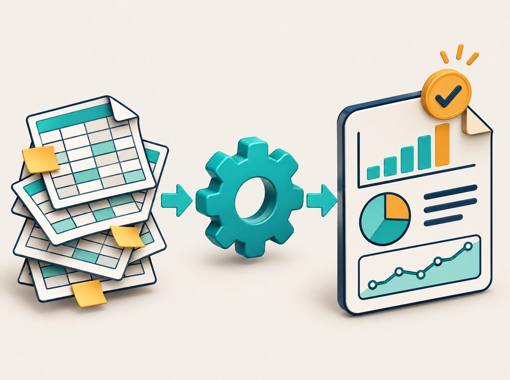

Filtros automáticos
Los sistemas ATS descartan hojas de vida por el formato o porque no tienen las palabras exactas del cargo.
Un servicio de Julio Canchano
Dejo listos tu hoja de vida, tu LinkedIn, tus certificados y tus portales de empleo, y te monto un tablero con inteligencia artificial que clasifica cada vacante por encaje, salario y modalidad.
Diagnóstico de 20 minutos por videollamada. Sin compromiso.
El problema
Los sistemas ATS descartan hojas de vida por el formato o porque no tienen las palabras exactas del cargo.
Un titular genérico y experiencias que solo listan funciones hacen que el reclutador pase de largo.
Revisar varios portales cada día y postularse a vacantes que no encajan cansa y no da resultados.
Qué incluye
Los mismos cargos, fechas y logros en todos lados, escritos para que te encuentren.
Con logros medibles y las palabras clave de tu cargo.
Titular, "Acerca de", experiencias, aptitudes y banner.
Carpeta digital con enlaces y carga en LinkedIn.
elempleo, Computrabajo, Magneto e Indeed con alertas.
Cada vacante clasificada por encaje, salario y modalidad.
Cómo funciona
Alertas por cargo, ciudad y salario en 4 portales.
Un buzón dedicado solo a tu búsqueda.
Encaje con tu perfil, salario y modalidad.
Las mejores vacantes aparecen primero.
Solo a las que valen la pena: 10 minutos al día.
Sin bots dentro de tu LinkedIn: la automatización trabaja sobre las alertas que llegan a tu correo, así tu cuenta no corre riesgo.
Planes
Listo en 3 días hábiles
Listo en 5 días hábiles
60 días a tu lado
Planes desde $249.000 COP. En el diagnóstico gratis te digo cuál te conviene y te envío la propuesta con el precio exacto. Pagas 50 % al iniciar y 50 % a la entrega.

Ing. Julio César Canchano Parodi
Ingeniería · Automatización · IA
Quién está detrás
Soy ingeniero electrónico de la Costa Caribe, con más de 10 años en redes eléctricas y sistemas SCADA. Mi trabajo es convertir tareas manuales en sistemas que funcionan solos.
Buscar empleo es uno de los procesos más manuales que existen. Por eso le apliqué lo que sé hacer: un perfil bien construido y un sistema que te trae las vacantes correctas.
Reglas claras
Uso tu acceso a los portales solo durante el servicio y con tu autorización. Al terminar cambias tus contraseñas.
Firmas una autorización de tratamiento de datos. Tus documentos se usan solo para tu servicio.
Ajustamos tu LinkedIn juntos en videollamada, con tu sesión abierta.
Garantizo un perfil optimizado y un sistema funcionando. Conseguir el empleo depende también de las empresas.
Preguntas frecuentes
Tu hoja de vida actual, tu perfil de LinkedIn en PDF (si tienes) y el cargo que buscas. Con eso hago el diagnóstico. El resto de documentos te los pido con una lista clara.
El plan Esencial queda listo en 3 días hábiles y el Profesional en 5. La Búsqueda Acompañada dura 60 días.
No, y desconfía de quien te lo garantice. Te garantizo un perfil que pasa los filtros y un sistema que te trae las vacantes correctas. Conseguir el empleo depende también de las empresas y de tus entrevistas, y en eso también te puedo preparar.
Sí. Configuramos alertas de trabajo remoto y, si te quieres mudar, búsquedas en otras ciudades y en organismos internacionales. Para el exterior suelen pedir inglés, así que lo revisamos en el diagnóstico.
50 % al iniciar y 50 % a la entrega, por transferencia, Nequi, Daviplata o PSE. La Búsqueda Acompañada se puede pagar en 2 cuotas.
Te muestro qué está frenando tu perfil y te doy un consejo que puedes aplicar hoy mismo. Escríbeme "PERFIL" por WhatsApp.
Correo